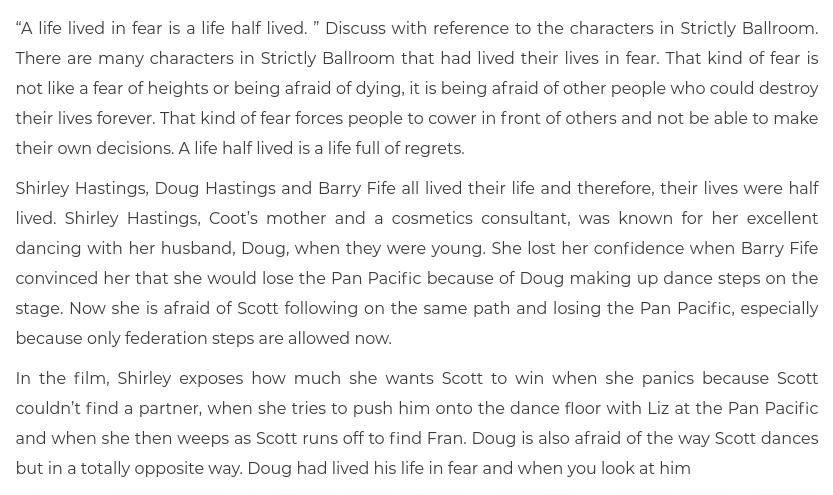

Here we continue with periodic questions that I ask the Domain Commander for clarification on. This group concentrates on a number specifically asked by top influencers, lurkers, and participants on the MM website. In this instance I took my time to get and obtain answers to the various questions, and devoted time and effort to acquire the most accurate and useful information possible.
This group was compiled and answered in December 2021. There are two parts to this session. This is part 1. Part 2 follows.
The truth be told, I had to spread this Q&A out, and many times it was extremely difficult for me to read the actual answers as my physical life was chaotic, noisy, demanding and discordant at the time that I received the answers. I need quiet, peace and calm. But with house construction all around, a two year old, and the demands of life, work, industry and circumstance, it’s just been difficult.
All of these questions are exactly as posted to me, either by email, comments, or in the forum.
Keep in mind that I also needed to differentiate between “noise”, my “internal thoughts” and “The Commander”. What I do not EVER want to happen is my own personal thoughts, and ideas override what the Commander is telling me.
So in this particular instance, and throughout this article, I have asked to “increase the gain” and “open up the volume”, even though it is more uncomfortable for me personally, so that I can obtain the best quality responses free of any personal opinions or thoughts.
[1] Question: Close Encounter 5 Protocol
“Some are familiar with Dr. Steven Greer’s “Close Encounter 5” protocol through his film and interviews. Is this a useful or productive activity? Is there reason to be cautious, or other qualifications to consider?”
From HERE;
The Close Encounters-5 (CE-5) protocol or “human to alien contact process” uses meditation as a baseline skill to accomplish the communication. As a seasoned Buddhist monastic, I have good experience with preparatory things to not do while getting ready for a serious meditation session. Since many CE-5 group events are scheduled events, I tend to look at them like little mini-meditation retreats. Prepping for a meditation event should start 48 to 72 hours prior to the event. This preparatory work is mostly related to food and beverage intake. At least 48 hours in advance of a retreat meditation session, cut most, if not all, intake of alcoholic beverages, caffeinated drinks and soda pop. Alcohol is a depressant, Caffeine is a stimulant. And soda is gassy. These beverages have an impact on meditative practice. Now let’s put some wisdom on the table about this. A cup of coffee in the morning is one thing, and so is a small glass of table wine with dinner. But multiple cups of coffee at work followed by super-sized, high-sugar, high-caffeinated soda is another. Nothing impacts meditation worse than caffeine jitters or soda-induced gas movement within the body. Experience has taught us that certain foods aren’t conducive to good meditative practice, either. Cauliflower, onions and garlic can cause gassy responses that are unsettling in meditation, if not noisy. Spicy sausage, pepperoni and pizza are certainly not advised during the same day of an evening meditative CE-5 event. On the day of a CE-5 event, give yourself plenty of time for a leisurely drive to the event. Arrive early, then give yourself a chance to “cool down” after the agitations from highway driving. Take a settling walk at the CE-5 site and relax. It’s also important NOT to engage in any recreational drugs or alcohol prior to meditation. You are only setting yourself up for failure or at least a seriously diminished experience. CE-5 protocols forbid such practices at the events. While we’re on the subject of mind-altering substances, they have no place in the meditative experience. Anyone who tells you that some substance will enhance your meditative experience is lying to you. The objective at a CE-5 event is to quiet your mind and shift your consciousness in such a way that your reality is expanded and you establish a common ground where it’s possible to consciously communicate with extraterrestrials.
“The objective of the “C5 Protocol” seems to be summoning and communicating with transdimensional/ET entities through group focused meditation, with the goal of hastening sentience alignment.”
So what is the specific question?
Can meditation techniques be used to contact extraterrestrial entities?
Yes. They can be used. However, they do not have to be used. When we contacted you (MM) you were not in a meditative state. We simply blasted through whatever consciousness walls that were acquired over your human life. We still contact you now, just like we are doing today. Or course that is by EBP (sic.) and direct. However the system process remains the same. This questioner is focused not on extraterrestrial / non-physical form comm channels, but rather the skin-suit human initiating contact with an unknown entity; sending out a beacon or signal so that something / someone / some other entity would answer it and open up lines of communication. To that I can offer some advisement's. [1] How often does the MM readership / humans / people in general enjoy watching commercials, hanging on and listening to telephone advertisements, or read the Berma-shave ads? Do people really read the fine print on a Lydia Pinkham bottle? Most, when confronted with unwanted solicitations, turn them off and ignore them. The same is true for mental telepathy. It's just M-band (sic.) noise that needs to be filtered out. Any well intentioned skin -suit will need to understand that any signal that they send out will just be interpreted as background noise. [2] To communicate, you need two consciousnesses. One to transmit and send, and the other to receive. unless you specify who is the recipient of the comm channel, the "message" will just bounce around without going going anywhere. You need a very specific target to send to. [3] General group "messages" can result in responses. This is simply due to the large number of participants increase the depth and color / image complexity of the message, and other species can notice the message. It is like driving a black Model-T automobile, and then a fancy white Packard zooms by on the road. You notice it because it stands out. [4] There's many threats and hazards outside of the physical general population area of the Prison Complex. You do not want to invite any of these entities into your life, but you do take that risk when trying to open up a comm channel without a target. In general, meditation and fasting, good healthy lifestyle and diet, as well as consciousness centering are important physical practices for every skin-suit to partake in. Whether or not they are important in one's ability to communicate with strangers is a personal matter that varies from individual to individual.
[2] Question – mRNA vaccines
May I ask about the Western vaccines and what’s in store for us? It’s more than a little worrying considering the Deagel figures are correlating with the vaccine roll-out so well. So many friends and family have had their MRNA shots here and the hive-mind willful ignorance is fast approaching mandatory injections. Even my twelve year old nephew has had it.
I’ve had two AZ jabs. That’s not MRNA but still produces the full “Spike Protein.” I’m supposed to get a Pfizer “booster” shot and dodging that will become more difficult soon.
So the questions I’d like to ask are:
What timescale is involved with the vaccines going wrong?
I calmed myself down and opened up a comm channel. I intentionally forced myself to receive and not to interject anything into this most important discussion. The comm opened up at 14:59 Thursday afternoon. The entire premise of the mRNA "vaccine" protocol, as it has been promoted, is in error. There needs to be some other alterations in the chemical mixture injected that will mitigate the bad or more worrisome effects. This mRNA injection is not a vaccine. It is an injection that is designed to alter the population / society control by the governments that use this methodology. The concept is that this injection will require as-needed boosters to act as a shield to all manner of foreign substances, germs and viruses. This is not only attractive from that point of view, but that it will also become a predominant revenue stream to the producers of that injection formula. The governments that promote and use this injection scheme do so with no intention of vaccinating anyone. What they want is a platform to easily control, and defend the population with, when they create dangerous viral weapons to launch against the rest of the world. The nations favor this methodology as they can include other chemicals and substances at will that would be useful for them to maintaining crowd control, and to manipulate the population. Already there has been developed systems that resonate with the injected mRNA resultant mutations that create harmonics that allow the government to change the actions and thoughts of the injected populations. They can thus calm, anger, upset, or create any kind of emotional reactions in the population that they control simply by having the population so injected, and then pulsing frequencies at them through social media. This system is fraught with difficulties, and none of these were addressed during the rollout phase. And today some of the side effects are being noticed. This includes the biggest culprit with is known as the "spike protein", but others that alter the cell structures in a negative vector downward trend. The enthalpic result is early organ failures, particularly of the critical priority organs such as liver, heart, kidneys and lungs. The damage is being noticed with alarm throughout the nations using this type of injection. However, they have mandated that there shouldn't be any reporting of the danger, and the damages and deaths that have resulted so far. Unless there is a direct change in the policy positions of the various governments involved, then you can expect an increase in hospitalizations and deaths. None of which will be recorded as due to the mRNA injection, but rather to other causes. Due to the number of people so injected, there should be an increase in deaths directly attributed to the mRNA alterations through 2022, into 2023. By late 2023, the deaths should be obvious to all, and catastrophic emergency steps would most likely take place by the governments involved, with peak damage manifesting in the 2024 time period. This forecast can be changed and vectored to other outcomes provided that a different world-line anchoring program is in planning and in process of being implemented. Unfortunately, we (The Domain) and MAJestic (in whatever incarnation it is today) is not operating such a program. There is another option, where immediate rectification injections occur and take place that would minimize the adverse effects of the spike protein alterations. There is action in this regard, but we have no information whether it will be implemented by the government so involved. Our supposition is that the results will be tabled and not acted upon for political concerns. Prior histories suggest that a "black market" for these modification mRNA injections open up, and would be able to be procured by individuals with the proper currency of value at that time.But whether that will happen in this case is unknown. The specific answer to the question is that deaths as a result of the mRNA injections are taking place presently. They will increase in scope and magnitude. By late 2023 it will be obvious that there is a major problem, and that at that time the actions of an increasingly unstable government leadership is difficult to predict.
Is it just the mRNA vaccines that are affected or all Western vaccines?
Only the mRNA injections are so compromised. The problem associated with the increase in causality figures have to do with an unanticipated side effect related to spike protein utility. This is only associated with the mRNA injections. Alteration of the spike protein though methodology not associated with mRNA changes should not be a concern. The problem is intentional mRNA alterations. Not the spike protein itself. With the other injections operate in other ways, and all have their own issues, as do the "dead host" vaccines, the primary worry and concern is with the mRNA injections that alter DNA. If anyone has taken the mRNA injection, the best thing to do is to maintain good health and healthy behaviors. This become more critical as this will help mitigate any potential problems created by the spike protein. Further, exercise, always needed, should become a priority. Not just for good health but to enrich cell wall maintenance with fine oxidization. The problem with this side effect is that people continue to indulge in unhealthy behavior when they should start eating better, performing a minimum of exercise and controlling their thoughts. Exercise with fresh air is best. This would be a nice walk in the woods or forests, a bicycle ride along a river or a lake, or even a icy swim (Russian style) in a frozen lake. If you have taken an mRNA injection you will seriously need to change your diet. Processed foods will need to be eliminated from your diet. Both exercise and diet will not, alone, prevent the catastrophic side effects of an errant mRNA initiated spike protein, but they will allow your body to heal if and when the consequences of a errant spike protein becomes apparent.
And this patent fell into my lap…
[3] Question – Current role and background.
As I read more and more of MMs material I come across many of what I can only describe as synchronicities in life and experiences.
I wonder about my experiences in LD that shadow his experiences in the non physical planes, the similar way I was (seemingly) trained through LD. this includes the sudden urge to join the air-force and the seemingly bizarre way my mind sometimes works where a maddening urge to do something will drive me in a particular direction to the point I cannot not focus on it. Further, the idea I am entangled within the life of SD (and everything that was stated about her last Q&A) and I have to wonder;
Am I simply a consciousness experimenter who got caught up in something much, much bigger than he was ever anticipating to get caught up in or am I something/ someone else entirely? Who is Trick or Trip?
You are something else entirely. You are not an average person / NPC / shadow person (sic.) / follower / rabble / crowd member. The role you are living out right now was planned for prior to your birth in great detail, and coordinated with both MM and SD. SD is part of something completely different from that of MM, and you are part of that situation / condition / arrangement / reality / segment. I cannot divulge your relationship with SD except to say that it is significant and that you have and hold a major role in her many (and multiple) lives and her on going objectives. This includes repeating reincarnated experiences, and journeys in and out of the general population segments of the prison complex. Because you straddle the mission parameters with both MM and SD, you have a dichotomy of reactions with includes some that are not fully actuated to your own ideals. This is a consequence of understandings and experiences that broach both worlds and being the interface between them causes you some personal discomfort. You are aware of this but do not vocalize it for fear of the loss of face / consequences / fear / misunderstanding. But it is quite reasonable given your unbridled power inherent in the abilities that you have actuated at pre-birth. You should not worry or be concerned with who you are or what your role is. You have, yourself, mapped out this life (of yours) in great detail, and you are following it adroitly. In fact, you are not straying off your mapped out (I picture a pumpkin colored thick dotted line) route through the MWI (sic.) as most others tend to do. You have / possess great discipline in the regard to your mission parameters and a great deal of control over your actuated and unrealized abilities (purposefully suppressed for this particular life). The fact that you agreed to this role , and SD adapted her life to accommodate your desires speaks well of your plans, intentions and value. Your role is not accidental. Nor it is trivial. Nor it is a developed vector that adapted to changing concerns and environs. It is planned and fated by you working in conjunction with your leadership. Your leadership, is not who you (in this physical manifestation) associate with, but something else. Who that is is not directly obvious to you at this time, and should be of no concern to you. Most IS-BE inmates in the prison skin-suits come from a great and diverse background that stands apart in stack contrast to the baseline "average" inmate. In your case it is clear that you are part of a team working on multi-dimensional fracturing and disassembly of pocket universes associated with this prison complex. This benefits The Domain and so a shared relationship was forged which included your voluntary participation. All that you are doing now has great value and is significant. Many of the advantages of your efforts will be realized within a sixty to seventy-five year period hence. You are but laying the fundamental groundwork for your follow up efforts later on. This is all part of your agreed upon strategy and why you have been gifted / granted / authorized / adapted to the skill sets that you currently enjoy and have utilized. On a personal note, SD should be doing better now. It's not just your fears at the time, but we took care of some matters with her other body(s) that should make things slightly / a bit / somewhat easier for her from now on. Of course, we did so with her approvals, as well as both of your leadership. If your physical body / state / being is uncomfortable with this, we will stop this kind of protective alterations. You need only vocalize it. Your physical health is fine. You need not worry or concern yourself with the fears that are manifesting. However, you should get more fresh air (The term "fresh air" seems to be a very important theme right now) on outside walks, and watch your food intake. Maintenance of diet is important for everyone in your family right now. You will also see a degree of clarity in your LD efforts and that will become a measure of your physical health.
[4] Question – Life prior to imprisonment
I would like to ask a personal question as well because I hope that the answer might unlock past memories and help me get closer to my purpose in this life:
Who and where was I before life in this prison environment and how did I end up here?
It would really feed my curiosity to receive a short reading from my file in the Domain archive if there is one. I understand if you choose not to ask it because it is too irrelevant to everyone else.
Thanks for going through these exhausting communication sessions with the commander! They are very insightful packed with food for thought!
(Tuning in like that of an old shortwave radio for some reason. Like crackling noise and drift. Curious. I guess it is the Commander's way of telling me that he is accessing a computer files or records. Really odd. Quaint. Like how someone uses an old fashioned telephone bell on their brand new cell phone. -MM) You lived in the "Old Empire". You had spent many life-times and reincarnations in the "Old Empire", and your life predated it's arrival when it came into being and conquered the worlds that you had come to refer to as your "home". You had preferred a singular species, rather than jump for species to species as is sometimes the case. You held roles in multiple sexes. All three of the dominant sexual orientations appear to have been your preference. With no specific preference one way or the other. You are uncomfortable on the earth as it is far brighter and more electromagnetically charged environment than what you have become accustomed to. I know that you are especially curious about your appearance, your home(s) and friends that you left behind. Your species trivially resembled a satyr of the Greek mythology. Only that you were were far shorter than what is depicted in paintings and illustrations. The male form possessed a rather long and always rigid penis, and the female form was without horns. The third / incubated / hosting / transitional form had a tail (?) with a large belly (?). All forms had hooves and hairy legs as depicted in ancient Greek art. Your homes were of the "Old Empire" standard model and truly resembled "old medieval style". As was true to your species, when in the male form you cavorted with members of the other sexes and indulged in many parties and recreational pursuits. And yes, you have many friends that still exist inside the "Old Empires" that miss you and would like to see you again. Often in the female form you raised rabbits. It was a great love of yours. And these rabbits are of the same identical form as what are present on the earth today. You were incarcerated because you had broke a series of major laws of the "Old Empire" and had previous lives that had also committed serious crimes as well. The judicial group within the "Old Empire" judged you as an incorrigible entity, and sentenced you to banishment for multiple lives. You were to have stayed banished, but you chose not to do so. You believed that you could exist on the outer fringes of the "old empire" and not be noticed. Apparently you chose to incarnate in your old form, and you simply maintained your old behaviors in defiance of the "Old Empire" judicial rulings. And when you reappeared in the "Old Empire" in a new incarnation, they arrested you and sent to to the penal colony on earth. This was in the early years of the Prison Complex. In those early years you maintained your satyr-like appearance, and you did not wear a prison skin-suit. Human skin-suits did not appear for many years later. You were one of the first batches of inmates to the prison environment. Your crimes were a mixture of unsanctioned <redacted> / physical murder, identity switching / ,redacted> / body swapping / unapproved soul extraction, assault, manipulative fraud / deception, torture without (reasonable) breaks (?), and substantive (?) tax evasion. (I get the image of a short Harry Mudd [from the early Star Trek television series] with horns and goat legs standing in front of what looks like a collection of real life muppets "in the flesh".) You have spent a very long time in the Prison Complex, and it took you a long time to adjust to your conditions. Over the centuries your IS-BE consciousness has changed, and the mantid primes have been easing up on the punishment sections of your general population visits and allow you longer "rests" in "Heaven". They would welcome / suggest / offer parole for your IS-BE being under monitoring. However, that option is no longer available as the entire parole system was destroyed by us (The Domain) during our conquest of this region. On the positive side note, you have demonstrated fine compassionate yearnings and behaviors and are worthy of release. Upon your death, all you need to is call out for Domain pickup and we will work with you on your next steps post incarnation. Our plans are such that we do not want to release you back into the prison General Population but rather work on your rehabilitation so that you can continue on the path that you have elected to follow. We do not recommend a return to the "Old Empire" to you, nor do we recommend that you try to relive your lives in that body and within that society. It is time for a new life and a new start for you. In your case your past is toxic and without it you have a very bright future ahead of you.
And I thought that Mades Escapleon was bad. Sorry, guy. Maybe it’s best not to know of our past, eh? -MM
[5] Question – MM Members & connections
An idea that I’ve had lately… it seems several of us have connections to each other that go deeper than just some random meeting of people on the internet. It’s like… meeting someone you knew from childhood 20+ years later.
Sure their appearance has changed but on that first look you know they’re familiar and don’t know why.
It feels like that.
Would the Domain have any recommendations on how to explore that connection?
For many mm participants everyone is reliving associations that they have purposely mapped into their pre-birth world-line template (sic.). Many skin-suits think only of the physical, and while they can conceptualize life in the non-physical they cannot take this reality into account with their day to day lives. Everything that the skin-suit experiences in the General Population has been fated to happen by the Pre-birth world-line template (sic.). You can thus easily conclude that this meet-up and community has been fated to occur and is following a schedule and implementation as previously agreed to. To explore the connections between all mm followers and new associations, all one needs to do is to add affirmation questions in your campaigns (sic.) to answer those questions. There are some individuals that have continuing relationships that go back many multiple lifetimes, while others not so much. But that does not matter in the confluence of the exchange of thoughts and ideas that synergistically work together to obtain the desired end result. The relationships that you are building here is neither accidental or trivial. Everyone that comes here and stays do so because it resonates to them. This frequency resonance is intentional, and artificially induced to create the forged alliances and joint support network that all enjoy. I can tell you that numerous members that you interact with have been invited to join in this effort by you personally and their agreement to work with you on and during this incarnation is very significant and your appreciation of it is what you are experiencing.
[6] Question – Amelioration of mRNA side effects
I’d like to add something too, please.
I want no part of the mRNA experiment and will never consent no matter what (I would take the Sino versions or Sputnik without hesitation but they’re not available where we are now as we’re in a client state. It is out of the frying pan and into the pan for us.
However, if people close to us are being pressured into taking an mRNA shot against their will because their job or prospects depend on it (and will literally be fired/not hired, and likely impoverished or unable to pay mortgages or socially shunned if they refuse)…
Are the effects of these experimental inoculations something (or of a nature) that can be ameliorated or negated by adding an intention to my campaigns expressly aimed at preserving and protecting their health if they do consent?
Or would it be better to support them in their refusal by including intentions that they’ll be provided for if they lost their job/can’t get a job?
My wife has had to turn down a number of fantastic opportunities in Korea because she won’t consent to an mRNA inoculation and I feel terrible about this.
Other friends of ours are being pressured at work and threatened with their jobs, too.
For us, the financial aspect thankfully is not a big deal, but my wife is highly skilled and empathetic by nature and the thoughts of her having to sit at home as these opportunities pass her by upsets me even though she’d never consent without both of us agreeing that she should.
And how could any husband agree to something that could harm his wife if not now, but perhaps after the 8th or 9th fucking booster– something I’ve been reliably informed is the plan in an unending cycle of pharmaceutical tyranny unless these monsters are stopped dead in their tracks.
(Something I also feel strongly will happen going by what the Domain and notable others have said, and am thus prepared to wait it out until it happens.)
There’s also the added worry that my wife is of a delicate constitution, and has suffered with a number of minor, thankfully, but uncomfortable ailments since her mid-40s.
I’d be very concerned about her health under a continuous toxic load as the mRNA clearly is.
I’d rather take our chances with whatever pathogen these ghouls are going to release next. Our creators gave us a pretty good auto-immune system. I’m banking on that and the usual reasonable precautions.
I’ve never really been sick or– miraculously– injured in adulthood.
Apart from a few scrapes and close shaves, but am also very aware many others haven’t been so fortunate. And are very vulnerable to pathogens.
If the above is a bit mealy for the Domain disregard it, Mr Man. Or just simplify it whatever way you choose.
Summary: can intentions alone ameliorate the effects of the mRNA shot on our loved ones if they consent?
Yes. Intention campaigns (sic.) are a very powerful tool. And yes they can absolutely work to prevent the bad effects of an mRNA injection. They can also prevent the bad side effects of the mRNA altered spike protein initiation. Look at how the <redacted>. You cannot deny that happened. (No. I cannot deny that. I was very specific in my affirmations, and they occurred very specifically.) And (also addressed to MM) looking down the list of your green highlighted victory campaigns (I maintain a list of prior affirmations that came true.) there should be no question at all that there can be complete avoidance of catastrophic events. You know and understand this to be the absolute truth. However, you have to also adapt to the reality that there is a juvenile mRNA alteration within your body. You will need to adjust your lifestyle to avoid triggering a malevolent biological reaction. Think of it as a gunshot wound. You healed up but the lead slug is still in your body. It has the potential to kill you, but is lying there dormant. By being healthy, watching your actions, exercise and diet, you can determine if and when (if ever) the slug will dislodge and cause your trouble. It is like that. The most important / key change to lifestyle is fresh air and moderate walking or exercise around in the fresh oxygen environment. In addition, your diet will have to severely reduce the amount and number of processed and super-processed foods. It is not a matter of weight gain, in so much as it is a matter of the ability for your body to handle and adjust to a weakening of cell walls. Good food, lots of oxygen and hydration will benefit you substantially. As well as centered and strong positive thoughts. Avoid media pummeling of upsetting and disturbing news. (Further, once you get the mRNA injection, you will forever need to maintain "being safe from mRNA malevolence" in all of your subsequent campaigns. -MM)
Or would it be better to wait and focus on a “healthy, content and provided for without allowing oneself to be pressured into taking part in a dangerous and illegal mass experiment against one’s will” intention?
This is an option. It is up to the individual person to make the necessary decision in this regard. We cannot, and will not, make decisions for the individual consciousness. The decision is up to them and them alone. There are always alternative solutions that are not obvious, but worthy of investigation. Rather than thinking in terms of black or white, consider a borderline solution. If a job requires a vaccination, but does not specify what type, then take the one that you believe is the safest and then accept the job position. If that "safer" version is not available in your area, research, and you will discover that there can be other solutions that need only a detour and an extra allotment of time to implement.
And if the above sounds selfish, it’s not meant to be. I’ll include every single person– and especially the MM Crew– who has been pressured by traitors and NPCs into “consenting”. There WILL be justice eventually. I’m positive in a Pissed Lizard kind of positive about that.
(And thanks for remembering me in your intentions, PL. And your kind words wrt the vaxx. Please include my wife and her friends too as you and everybody else here are in ours.)
I cant wait for the day these scumbags will get their just desserts. But I’m a patient guy.
[7] Question – Desirous of confirmation
#1 Should we continue ? I would not interfere in the plan that brings us together . #2 What is my role apart from being rufus $3 oula c is under construction, to form reinforcements # 4 I’m sorry didn’t send me to the cornfield #5 I want a strong and contaminated inking from the old Empire
Please allay the fears and concerns of this questioner.
(I can only transmit what I understand, and receive what I am able to translate. In this case, I am asking the Domain Commander to ping the source, Identify the concerns and respond back to me. I do not know if it will work, but I am asking and transmitting anyways. -MM) What you are doing and acting and behaving is exemplary. I do not advise changing anything. You must start trusting your inner feelings, instead of your thoughts and worries. You need to adjust and center your consciousness. Use the techniques provided by MM to do this. Operate using all the tools provided by him, and do not question your actions or activities. Focus on the activity one day at a time. You need to realize that steady simple progress will take you to your goals and objectives faster than fear distorted reactionary measures. (I will not send you to the cornfield. Do not live a life in fear. -MM)
From the movie “Strictly Ballroom“…

And the image…
And so we continue…
Your association with the "Old Empire" was catastrophic. They seized you, arrested you, and sentenced you to eternity in the Prison Complex. In your case it was a very harsh sentence that needn't have occurred. You were "railroaded" into prison so that others might steal from you, and profit from you.Your closest family, loved ones, and your dearest business partners conspired to destroy you for financial gain. Then when the judicial system started to process you, they were bribed and convinced to give you the harshest sentence possible. When the time came for you to get justice, the situation was not in your favor and you were judged in a very harsh manner on pretend charges, doctored and false transcripts, and stood alone with no support or assistance. All of the charges against you that sent you to the prison complex are all false. But you have endured this situation for centuries. We do not advise you to have any memory recovery of those bad events UNTIL you have obtained the necessary amnesia recovery efforts to prevent the harsh and hurtful events from damaging your psyche and ego irreversibly.
[8] Question – judicial corruption of sentience.
So, first of all, as always MM, Thank you for this opportunity, and for the effort you put into it.
So, some context for my question: I am a Lawyer in the UK. At my current level, and in my current role in the criminal law, it appears most people are service to others – they do it because of some inexorable calling.
The criminal justice system in my country has naturally evolved over a very long time to be as fair and balanced as it could have been in the circumstances.
However, since 2012 especially, this has been corrupted from the Parliamentary level, access to justice has been destroyed, and the presumption of innocence is long since gone.
Efforts are made every day to pierce the independence of the judiciary, and once that goes, the whole system goes.
I love my role, for various reasons, but also because I get the opportunity to hold the state to account before it exerts its power on an individual.
The change seems to be sort of an “antibody response” to the judiciary holding parliament to account and being an unyielding line between the state and the individual. (Of course, this may be me romanticising my countries legal system, there is some bias here!)
The disinformation campaigns in particular from the government and the news to undermine the system is extremely effective in getting public support for changes that seriously harm the publics rights and freedoms, and remove the ring-fence of the states powers.
When this is done incrementally using the rule of law, then its extremely difficult to fight back against. See also – COVID fear campaign.
So, my question is such – when working in a system that is being pressured or changed from a service to others to a service for another (at best) or a service to self (at worst), is it still possible to both “play the game” AND try to make positive changes without being corrupted by it?
I’m not entirely sure where I lie, I hope I’m StO, but my talents and interests are best expressed in a role that has a dramatic impact in the lives of others, and I enjoy the “game” of it.
This, to me, seems StS. I suppose rewording it for the implied question: I’m pretty sure I’m going back for another round, but is it possible to fight back against corruption from inside without being fully damned by it, or am I just trying to justify my own narcissism?
I’ve tried to be as broad-strokes as possible, providing the context for my question without drowning you in meaningless detail.
It still possible to both “play the game” AND try to make positive changes without being corrupted by it?
Yes. You are a capable person. You can do both. You (personally) are a transitional sentience. You are well on the way to being STO, as that is your original calling. You need not worry about enjoyment of vices, pleasures of the physical, or respect and power. Those are natural human responses and desires. Power does corrupt. It is a natural law because it affects the way ego handles physical decision making efforts. However, by staying true to the idea of helping others, you remain a STO sentence, even if you enjoy the power, the control and the vices that go along with the position. Many IS-BE's enter the physical realms, and undergo the amnesia intentionally so that they can enjoy the pleasures of beauty. This is seductive and is a lure that other IS-BE's can use to control others. There is nothing wrong about enjoying pleasures of the physical and the ego. However, sentience concerns the desired end effects of one's actions. It does not matter if a police dog enjoys eating a nice steak bone after catching a robber. And it should not matter if you enjoy the power, prestige, respect and perks of your position if you serve true and real justice no matter how corrupted the organization is becoming or has become. Your biggest concern is that the system itself does not change your fundamental sentience. When you stop your role in managing justice on a one to one basis and instead look to selfish profit goals, then you are riding the slippery slope towards STS behaviors. That is ill advised. Never sacrifice your occupation for personal profit. That would have a disastrous domino effect on your future incarnations (if any - depending on your sentience). *FINAL*
This question was explored in the movie “TheDevil’sAdvocate”. Most especially in the final scene. -MM
[9] Question – Are we losing sight of our objectives?
Are we getting caught up in this momentum? discover and share a practical model or some kind of schematic standard that is consistent with your fundamental principles? Suggestions to help in the way of symbolic language and our s narchs and values put forward?
There is nothing wrong about desire and enthusiasm. Your objective is to help us (The Domain) to rescue the trapped IS-BE entitles, and then to release the prisoners in the Prison Complex under a rehabilitation program that will permit them to reacquire their memories and allow them to continue their existence in peace. As long as steps are taken in that direction, it is of no concern what the size of those steps may be.
[10] Question – Indications of “Old Empire” behaviors
…As an example, from the above email we can gather clues. The Old Empire still runs the show.
There is an inner core (or many inner cores spread through out the world. They cast votes in those cliques. Etc etc..
So we see glimpses into their little world on occasion.
Then the media shuts the door. I am leaning towards the probability that the whole of the western elite are compromised. (Once you put on those glasses from They Live, every weird thing makes sense. But you need to put on those glasses to make any sense of our weird world.)
In fact the dominant culture in many parts of the world is Old Empire in flavor.
And that culture is anti empathy and anti human in its nature.
MM had a Rufus article that struck me. A video by one woman who observed that people cared for stray cats and dogs in America but they don’t even acknowledge their homeless. BUT if you try a Old Empire Larp, then it’s perfectly natural.
Is the difference in treatment of pets to fellow humans an indicator of “Old Empire” behaviors.
Yes it is. I will elaborate later when you (MM) are not so tired and stressed. ---update--- When The Domain took over the physical territory of "The Old Empire', many in the leadership roles escaped. The vast bulk of them hid inside of the Prison Complexes with "special passes" which allowed them to enter and leave at will without being tethered to the entire prison containment system. These individuals have since taken over various operational aspects of the Prison System, and created sub-pocket universes and environs from which they operate in relative comfort. One of which is the (so called) rape centers that seem to plague the egress and access routes towards the pocket universes of "Heaven". Many of these IS-BE entities are now wholly corrupted and operating at a very low level of empathy. This is strong STS behaviorism and are easily identified. They resemble a termite colony when you observe a (galactic) overview. Yes. To answer your question. In general, any resemblance of "Old Empire" behaviors is a guaranteed enclave of selfish and dangerous incorrigible IS-BE within the complex and their "Old Empire" handlers. they cannot disguise their behaviors for long. They can put up a good front and use deceptions to hide their true nature, but over time, their baseline behaviors manifest. Members of the "Old Empire" had pets. They, like human skin-suits, possess a great deal of fondness for their pets and honor and treat them well. But the population of leadership that has run the "Old Empire" do not represent the mass population that they govern. When they would take a pet, it would be for purposes of presentation and image. Not out of a love or a relationship. Thus there must be a distinction made between the leadership, and upper tiers of society, in the "Old Empire" and that of the common folk. The questioner would be surprised to note that there are cats in the "Old Empire" and they behave and act just like the cats do within the Prison Complex. The same goes for other pets that have found niches within the "Old Empire" societal structure. When a member of the elite exited the "Old Empire" and hid away in the Prison Complex, they carried with them their identities, their "golden passes", their retinues, and their behaviors. In so doing, they were able to corrupt so many features and controls of the Prison Complex. And they corrupted it in such a way that they would live fine comfortable lives. There is not a direct correlation between modern Western governmental leadership and "Old Empire" leadership-in-exile, but there is enough of an overlap to come to the conclusion that many of the powerful people in the earth world today, are from the "Old Empire" power cabal.
[11] Question – Vaxx influence on memories of past incarnations
I will pose a question on the vaccines , but in the name of Opsec, I will leave it here. For your discretion to inform us the response, that is entirely in your hands.
To me, the vaccine rollout is so insistent that it must serve a higher purpose. I do not believe that it is used to cover financial matters. I do not even believe now that it is for depopulation, and in fact I think the Deagel Report is disinformation.
This role playing was triggered when you mentioned that you got to your past lives by hypnosis. So I thought I would counterfeit some knockoff lol.
Does the vaccine have any effect on the ability to recall past lives or on the relationship between the mantid and his/her ward?
Everything in the physical reality universe has, to some degree, influence on the amnesia system of memory suppression. The mRNA injection is not designed specifically to prevent memory recall. It has other purposes related to physical government control. It possesses side effects not sufficiently mapped out and thought out. This will cause some problems for the communities so injected. As far as we can determine, any effect on amnesia either "good" or "bad" (from the point of view of an imprisoned IS-BE) is indeterminate. Certainly, other substances can be added by the government that can then be injected into a person to... [1] Make them more docile. [2] Make them easier to manipulate. [3] Make them conform or not conform to laws, rules and behaviors. [4] Alter their biology. [5] Act as a "key" to define "membership" in and out of communities. [6] Use as a protective biological agent, and then release a deadly pathogen to harm those not protected. And, which is the point that you brought up... [7] Control access to memories. [8] Control religious and philosophical belief structures. [9] Tighten or loosen the relationship between the mantid and their assigned ward. You have correctly identified the risks inherent in this government mandate. However, you need not be concerned NOW, at this time, about the impact on your non-physical bodies, consciousness or memory access.
[12] Question – Who am I?
Geez, MM, Id be a fool to miss this opportunity but I guess we are all at the point of where we stand in this effort of helping. While knowing can be a distraction in itself, knowing could also be one step closer to giving confidence in our abilities. So for my question would be: Who Am I in regards to the Domain? What role do I play in helping “Free the Lost Battalion” and the imprisoned IS-BEs? Thank you, my friend. Good luck.
Who is the questioner in regards to the Domain? What role do they play in helping “Free the Lost Battalion” and the imprisoned IS-BEs?
The questioner is a contact, initially of a trivial nature, that has come in contact with the Domain in this venue at this time. There is a willingness to participate and contribute, and a desire to do good and great things. There is no doubt that this individual is a contributor who is desirous of working with The Domain in the resolution of the release of the imprisoned Domain members, as well as the hope / desire / wish to also be released from the situation that they find themselves in. They seek understanding though contribution. We acknowledge this and offer a "seat at the table". In many ways this IS-BE is an enthusiastic "raw recruit" that holds great promise and even greater benefit to the society as a while. They have a slight "feeling" that this is the case, but we are vocalizing that it actually is the exact situation. As an individual, mission objectives and planning details are beyond the scope of their participation / understanding / contribution assets but that does not mean that they are meaningless. They hold a significant role, it is just that they do not understand how that role fits into the larger picture, and they want and desire clarity. This individual is a "walk in", and was not part of the initial pre-birth discussions for localized group membership and participation. Location here is more than just random, but is unintentional. We have scanned this IS-BE credentials / background / thought vectors / non-physical profile and determined that they are a fine recruit. Which is not what they want to hear. The questioner desires details. They yearn for a grander scheme of things that they fit into like part of a bigger picture. But their "larger pictures" is far more complex than your average skin-suit. When they ended up here, they did not come from the "Old Empire", they were a discarded drop-off. And they arrived with background / baggage / powers / abilities and complexities that earn them a prominent seat "at the table". Their Top Hat is pronounced and of fine manufacture. (I do not understand that reference. -MM) Unlike most other MM cadre's this IS-BE consciousness did not experience pre-birth training for the role. So we are working on this effort now simultaneously with their non-physical bodies. Which is why they seem to have some odd and unusual dreams. In the future the role that this entity will play will be as significant as <redacted> and <redacted>. This questioner need not worry or be concerned of the details. All is in good hands and under control.
[13] Question – Space Exploration
I would like to know two things (for now):
- What physical locations have human beings “traveled” to off this earth?
- Moon
- Mars
- Other
- What means of transportation did they use?
- Ship (what type of propulsion)
- Portal of some sort (what type of construct)
Of course I’d also like to know if humans actually accomplished any of this, or was it all a result of off-world assistance.
Human prison inmate skin-suits have traveled to the Moon, Mars, and Ganymede. The only public acknowledgement is the United States Apollo moon missions, where numerous skin-suits landed and walked on the moon. MM was on the moon and had medical procedures there. Many MAJestic operatives have visited the facilities on and in the moon and worked with MAJestic there. Some of which are in guarded spaces; pocket universes for protections.
Oxia Palus <redacted>.
Numerous MAJestic operatives have also visited facilities on Mars and Ganymede. But these were for special functions and for special purposes. There is a special training barracks and facility underground in Mars for the training of female MAJestic operatives. Also <redacted>. Obviously they are not told where they are, but they can easily discern that it is a secure place on a different planet.
The vast bulk of transport is via dimensional portal. There are occasional trips using vehicles, but that is used rarely. There really isn't much need for skin-suit participation on these machines. As also the environmental controls need to be adapted for human skin-suit use. Sometimes the humans participate in biological sampling and monitoring as a MAJestic requirement. It is however, always an observer role. Human skin -suits never perform medical procedures on other human skin-suits.
Vehicles are our standard local system craft, often of the mid-size. You will recall on <redacted>. <redacted>. (Sorry. Guys. -MM)
We have never moved an inmate within their skin-suit outside of the Prison Complex walls. We have moved these humans to various stations, facilities and vehicular craft working inside of the complex walls. For the most part, we perform what ever necessary biological modifications are required on their non-physical bodies in a form of "catch and release".
MAJestic operations has sometimes required the placement of humans at certain facilities for an extended length of time.<redacted>
[14] Question – Rhesus blood group and Faeries
First up:
The Rh blood group system is a human blood group system. It contains proteins on the surface of red blood cells. After the ABO blood group system, it is the most likely to be involved in transfusion reactions. The Rh blood group system consists of 49 defined blood group antigens, among which the five antigens D, C, c, E, and e are the most important. There is no d antigen. Rh(D) status of an individual is normally described with a positive or negative suffix after the ABO type (e.g., someone who is A Positive has the A antigen and the Rh(D) antigen, whereas someone who is A Negative lacks the Rh(D) antigen). The terms Rh factor, Rh positive, and Rh negative refer to the Rh(D) antigen only. Antibodies to Rh antigens can be involved in hemolytic transfusion reactions and antibodies to the Rh(D) and Rh antigens confer significant risk of hemolytic disease of the fetus and newborn. -Wikipedia
Some people consider this type of blood an indicator of having Alien DNA. I know nothing at all about this. What I do know is that it is a rare blood type, and that my father possessed this blood type. He was also a member of Mensa. So what this questioner is asking is whether the presence of Rh blood is an indicator of extraterrestrial DNA.
There are different types of human skin-suits. Many of the differences are subtle. Special human skin-suit attire was often constructed for unique purposes at different periods in earth's history. Usually for the purposes of creating specialized clusters of inmates for social experimentation, reasons of safety, propagation success (and amusements). However, in this case it was for the purposes of human - feline bonding. This skin suit protected the humans and permitted the human - feline bonding to occur without problem. The earth-bound felines carried a parasite. And the resulting parasitic infection ended up killing immune-deficient humanoids at the time. This skin-suit was developed as a natural defense of the local parasitic infection. This such skin-suit is one that has an Rh blood group. This skin-suit was specifically designed to grant immunity against a localized food borne parasite. This parasite was problematic in the geographical area now known as Europe near the Pyrenees mountain group. This occurred approximately 60,000 years ago and started to manifest when human skin-suits started to interact with cats as companions. The cats would carry and incubate this parasite and it would be discharged by it's feces. Then the close proximity of children and adults to the feces would have the humanoids who interacted with these cats get sick. Over the centuries, the bloodline migrated world-wide and is now present throughout the world. Individuals with this genetic type of blood tend to have some similar traits that make them stand out from other human skin-suits. However, that is coincidental, and not intentional by design. (An oh-by-the-way "off hand" comment... -MM) This type of skin-suit is sought after by IS-BE's who are desirous of a life-time adventure involving intelligence, speculations and the creative side of science. IS-BE's that utilize this skin-suit gravitate towards science and STEM related subjects naturally and that simplifies early childhood development for fate mapping exercises in the MWI (sic.).
The sidhe are native non-physical inhabitants of the British Island grouping. They have similar cousins all over the earth. These non-physical beings have a vibrant life on the earth and in similar domains. They are not part of the Prison Complex. And they have unique abilities that their human skin-suit friends might leverage upon. (At this point I am told to look at a map. So I went to Bing and did a map search
I found many fictional maps. There wasn’t any real non-fictional maps available except on. Here is the screen shot…
What does this mean? The comm line opened up again and the dialog continued.
Migration of faerie populations moved upland over the centuries, however, their base civilization centers remained in place regardless as to the physical changes that occurred on the earth. As glaciers came and went, and water raised and fell, and as human population came and went, the faerie civilization stayed in place. They did not disappear as is commonly assumed. Being primarily a non-physical entity, they are not subject to the physical environs that humans are subject to. Once their homes and residences were above water, now many are under water. It is of no concern to them. They also do not experience time like humans do. They have a vibrant and lush life, though they prefer to migrate towards wooded areas devoid of the harsh and active thought of inmate human prisoners. This is why they are irregularly encountered. The Domain are aware of their existence, and there is a mutual level of respect. However, there is no formal interaction in any way whether good or bad, relatively.
Actually, I have a “feeling” that this answer did not really cover the question or answer what that this questioner was asking. So I rephrased the question. I hope the questioner does not mind.
What significance are the Faeries of the British Isles have / interact with the Domain or any other extraterrestrial influences now or in the past?
When the earth was being configured as a Prison Planet, the "Old Empire" had to deal with the problem that the Earth was inhabited with sentient intelligence's that did not their world to be occupied by the refuse of the galaxy. The primary and dominant sentences at that time were [1] a number of humanoid colonies on the planet, [2] intelligent non-tool making species such as dolphins, [3] primitive humanoid forms of limited tool-making ability, and [4] extensive and elaborate non-physical species. The Faerie realm and society was the largest, and best established. They did not accept the changes to the earth environment and a war took place. After a period of time, the major habitations of the faeries were destroyed, and the "Old Empire" took over the earth and it's surrounding geographical regions and created the prison complex that exists today. Because the skin-suits are contaminated by inmate skin suit modifications, the faerie population tend to avoid human contact. This was not the case prior to the interjection of the "Old Empire" policy plannings. From the point of view of the faeries, they endured a massive interstellar war, and this group of "Old Empire" administrators was just another in a long line of interlopers. What they did not expect was that a containment field would be set up that would isolate their society from the rest of the faerie societies throughout the galaxy. They are very bitter about this situation.
Final notes
This is part one. I have part 2 in process, and will release it when I am completed. All in all, I think that there are some great answers, and some perplexing attributes that need to be pondered upon.
I think that we all need to be careful about what we ask for. We might not like the result. I certainly didn’t (Mades Escapileon). But then again, I have absolutely zero recall of any life under that purported name.
This might seem like an easy enough task. It isn’t, and is very tiring and stressful to me personally. Many times I had to search for words to explain concepts that were alien to me. I truly hope that the information is of help to the questioners who participated. If your questions are not here, please wait. I have more questions in part 2 to follow. -MM